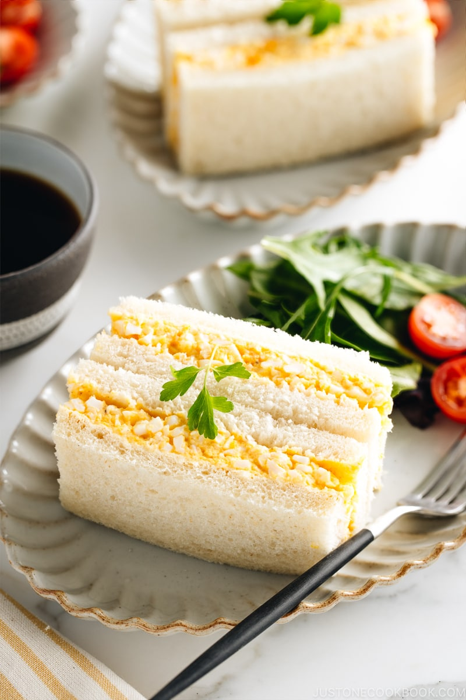

Eiersalat Sandwich

We are going to make this awesome tasting, very egg sandwich!
Zutaten
- veganer Eiersalat vom Edeka
- 2 Scheibwn ungetoastetes Toastbrot
Zubereitung
- Den Eiersalat dick auf eine Scheibe auftragen.
- Die andere Scheibe drauflegen.
- Genießen.